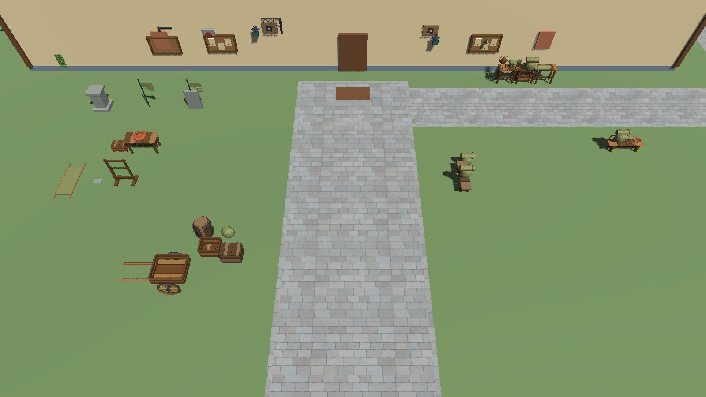

Character model
Iroha, the guild clerk
Face, hair, hands and legs refined in 25 steps, v020 to v045, with before and after sheets for each part.
See the before and after →
Character templates
Eve and Enosh
Eve's face, eyes, feet, undergarments and outfit; Enosh, the male template built from her, and the first male adventurer.
See the templates →
Priest spells
Skill animations
Holy cast circle, Lesser Heal, Smite and Barrier of Light, then a short fight run by the ability rules.
Watch the spells →
Environment
Adventurers' guild hall
From grey blockout to a planked hall with a service counter, a muster yard and the memorial wall.
Walk the hall →
Environment
Dungeon, floor one
Floor one rebuilt as a guild-held floor: stone kit, red guide line, lamps, a wading cistern. Now in the live scenes.
Go down →
Environment
Town and cathedral
Stone paving rebuilt across the whole town, and a plot table of 31 new buildings that includes the approved cathedral. The cathedral is planned, not built.
See the town →